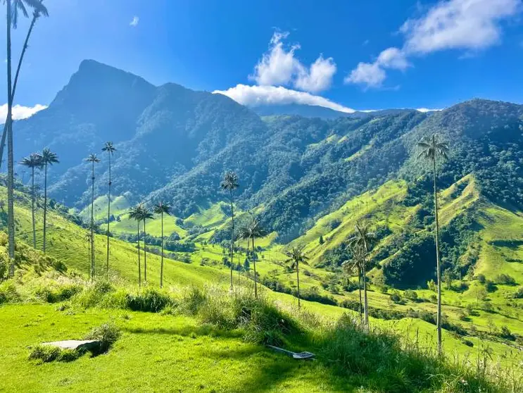
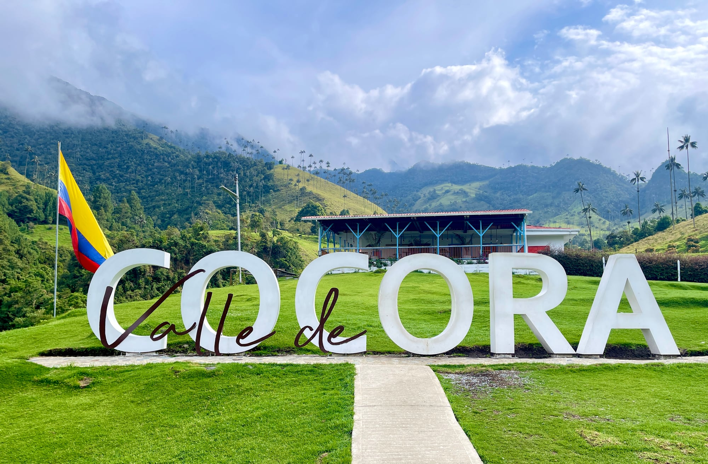

A Tourist Destination In My Region: The Cocora Valley

Introduction
Colombia has many beautiful tourist destinations, especially in the Coffee Region. One of the most fascinating places is the Cocora Valley, a destination famous for its breathtaking landscapes, green mountains and impressive wax palm trees. It is a wonderful place for people who enjoy nature, adventure and outdoor activities.
Location
The Cocora Valley is located in the department of Quindío, near the town of Salento, in the Coffee Region of Colombia. It is surrounded by mountains and beautiful natural landscapes. Many tourists visit this destination to experience the beauty of the Colombian countryside.
What Makes This Place Special?
One of the most remarkable features of the Cocora Valley is its wax palm trees, which are the national tree of Colombia. These trees can grow to impressive heights and create a unique landscape among the green mountains.
The valley also has beautiful views, fresh air and a peaceful atmosphere. Its natural beauty makes it one of the most recognizable destinations in the Coffee Region.
Things to Do
Visitors can enjoy different outdoor activities in the Cocora Valley. Some popular activities include hiking, horseback riding, taking photographs and exploring the natural surroundings.
It is also a great place to enjoy the scenery, spend time with friends or family and appreciate the beauty of nature.
Nature and Biodiversity
The Cocora Valley is an important natural environment with a variety of plants, trees and wildlife. Its landscapes are part of the natural richness of the Colombian Andes.
Protecting this environment is important because nature is one of the greatest treasures of our region. Visitors should respect the trails, avoid leaving trash and help preserve the local ecosystem.
Why I Recommend Visiting
I recommend visiting the Cocora Valley because it is a beautiful destination where people can disconnect from their daily routines and enjoy nature. It offers a different experience, with impressive landscapes and opportunities to explore the outdoors.
I believe it is a place everyone should visit at least once to appreciate the natural beauty of Colombia.
